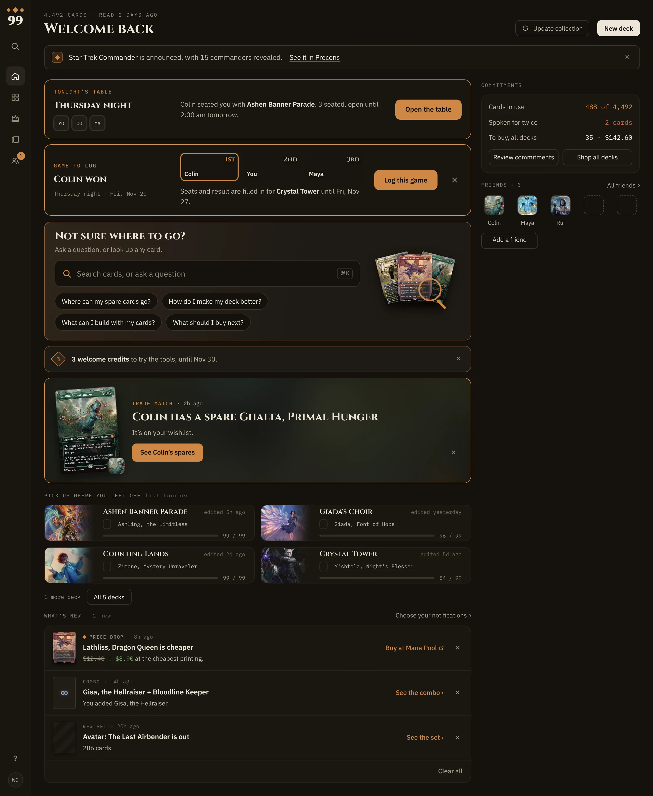
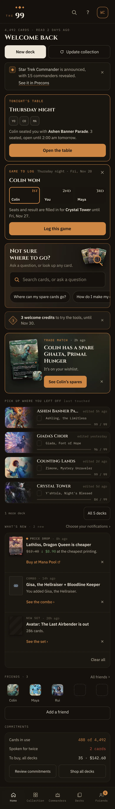
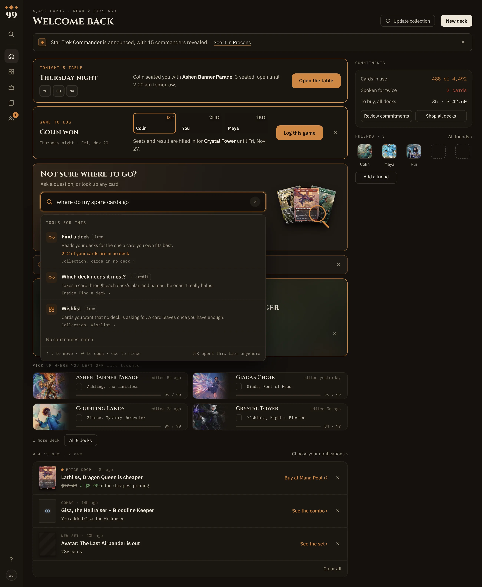

Home with everything a reader can have at once, so the panel is judged in its real company: an open table, a game to log, the arrivals banner, the lead story, What's new with unseen rows, Commitments, Friends with a badge. Rendered from main 7563036 with the shipped components; names, figures and art are illustrative.
8 · Home in full, a busy day (R6)
Drawn with everything Home can hold at once: the arrivals banner, tonight's Rule 0 table, a game to log, the search panel, the welcome credits, the lead story, your decks, What's new with two unseen, Commitments and Friends (with an unseen badge on Friends).
Order down the main column: the arrivals banner (spans both columns, as shipped), then Rule 0's cards (they close tonight), then the search panel, then the welcome strip and the lead. The panel is the first thing that is always there, under the things that expire.
On a quiet day (no table, no game to log, no banner) the panel is first under the page head, as H4.
On a phone on a busy day the panel starts at the fold (about 810px of 844); on desktop it sits under the two table cards, level with Commitments.
Pressed on desktop (H6 open), the results drop over the welcome strip and the lead; nothing below moves.
Q10 · On a busy day, does the search panel sit under Rule 0's cards, or above them?
Option A: under them (drawn): a table closing tonight and a game to log come first, then the panel. Option B: the panel first under the page head always, and Rule 0's cards under it.
Recommended: A. The table and the log run out; the panel is always there, and so are the magnifier and ⌘K. On a quiet day A and B draw the same.
Desktop · 1300 and phone · 390, at rest

H6 · Desktop, busy day
Banner, the table and the game to log, then the panel, the welcome strip, the lead, decks, What's new; Commitments and Friends on the right.

H6 · Phone, busy day
The same order in one column; the panel starts at the fold.
Desktop · 1300, typed on Home

H6 · Results in place
The dropdown drops over the welcome strip and the lead; the page under it does not move (Q9 A).